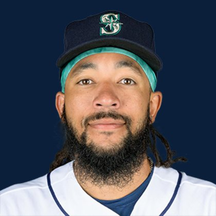

BASE KEEP
The Keep · The Diamond
Player File · SS SEA

J.P. Crawford
#3 · SS · Seattle Mariners · age 31 · B/T LR · 6' 0" / 202 lbs · MLB debut 2017 · Long Beach, USA
Keep avg267.0
# Boards4
BK Value44
Spread192–479
Hitting
| Year | G | AB | R | H | 2B | HR | RBI | SB | BB | SO | AVG | OBP | SLG | OPS |
|---|---|---|---|---|---|---|---|---|---|---|---|---|---|---|
| 2026 | 87 | 307 | 38 | 65 | 11 | 10 | 30 | 1 | 50 | 74 | .212 | .330 | .345 | .675 |
| 2025 | 157 | 570 | 69 | 151 | 24 | 12 | 58 | 8 | 74 | 122 | .265 | .352 | .370 | .722 |
The Keep#280BK 44
The Lineup#191BK 203
The Diamond#278BK 45
The 2026 line
Keep #280 · avg 267.0 · 4 boards · .212 / 10 HR / 1 SB / .675 OPS
Baseball Savant
Starcast · spray · pitch
Percentile ranks (Starcast) plus the official Savant spray chart for bats and pitch chart for arms. Open the full Baseball Savant page.
Batter · 2026
xwOBA
56
xBA
31
xSLG
24
xISO
28
xOBP
82
Barrels
27
Barrel %
36
EV
25
Max EV
35
Hard Hit %
25
K %
54
BB %
93
Whiff %
82
Chase %
96
Speed
20
Arm
18
OAA
2
Bat Speed
38
Squared Up
71
Swing Len
50
Hits spray chart
Minus
- Board spread 192–479 (287 ranks).
Board graph
Spread 192–479 · 4 sources
Every Board
Spread 192–479 · 4 sources
| Source | Rank |
|---|---|
| TDG Points | 192 |
| FanGraphs The Board | 193 |
| ATC ROS | 204 |
| FantasyPros Dynasty ECR | 479 |
BK News
On The Keep nearby — Brenton Doyle (#278) · Ryan Waldschmidt (#279) · Cole Young (#281) · Jordan Lawlar (#282)
All players · The Keep · The Diamond · BK News · The Lineup · Pitchers · Calculator